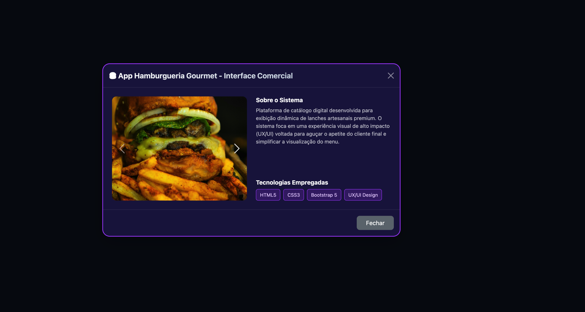
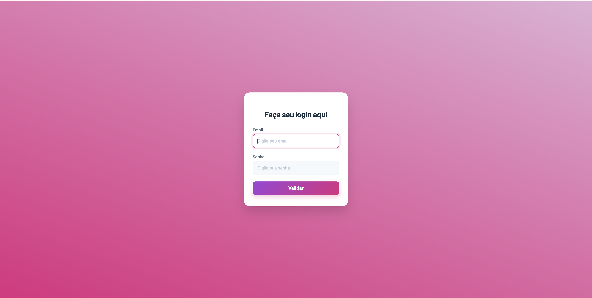
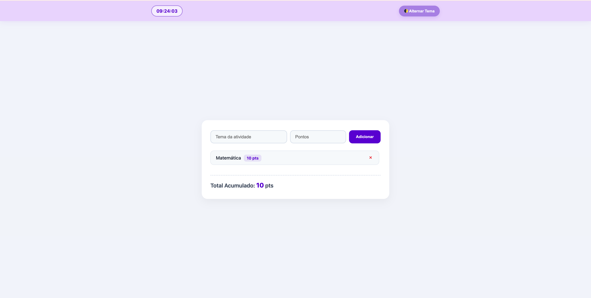
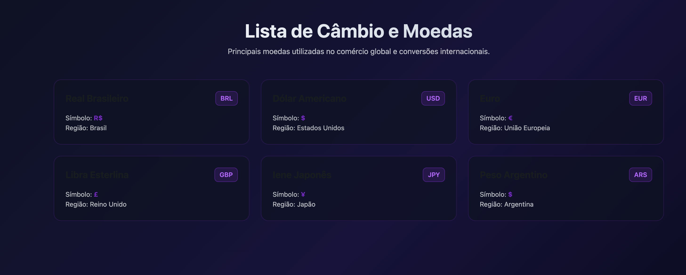
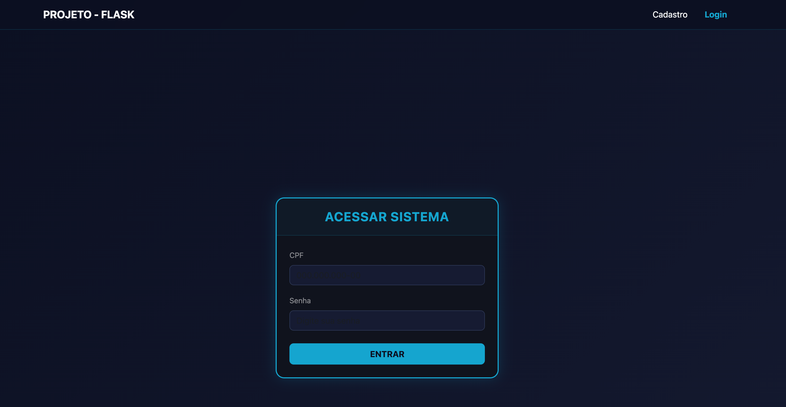
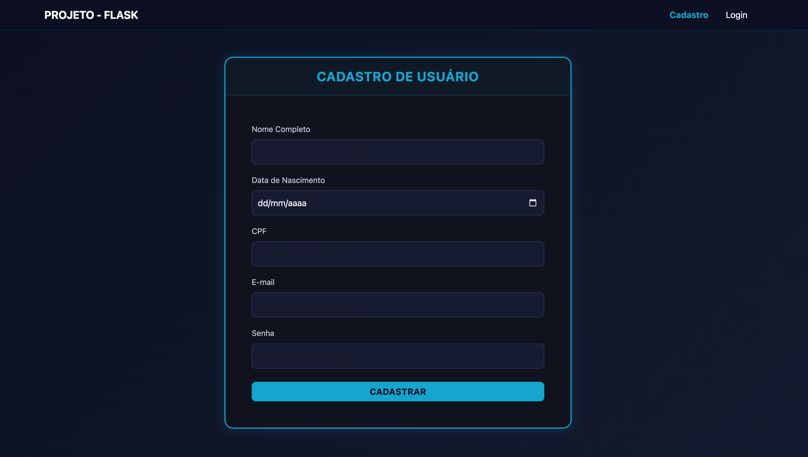
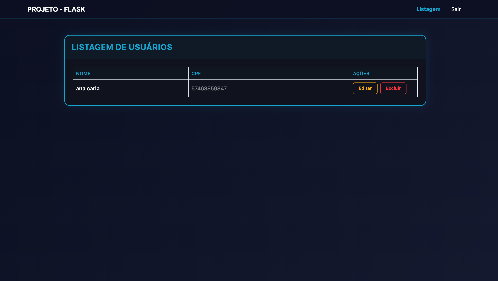
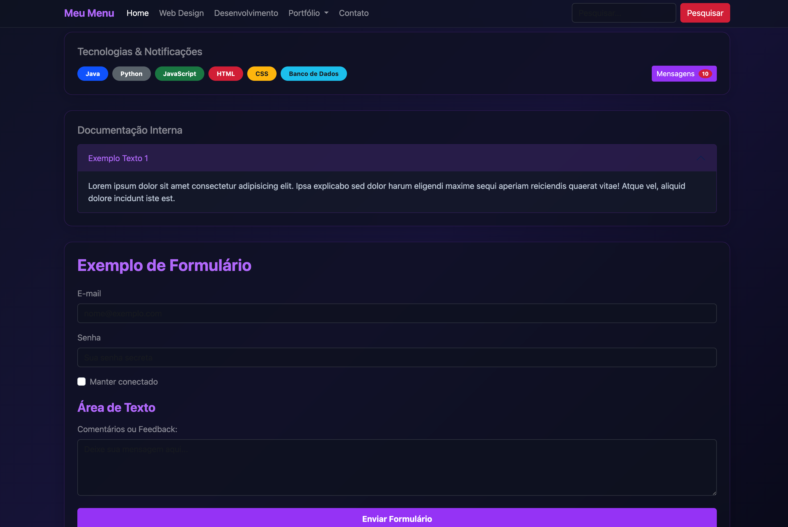
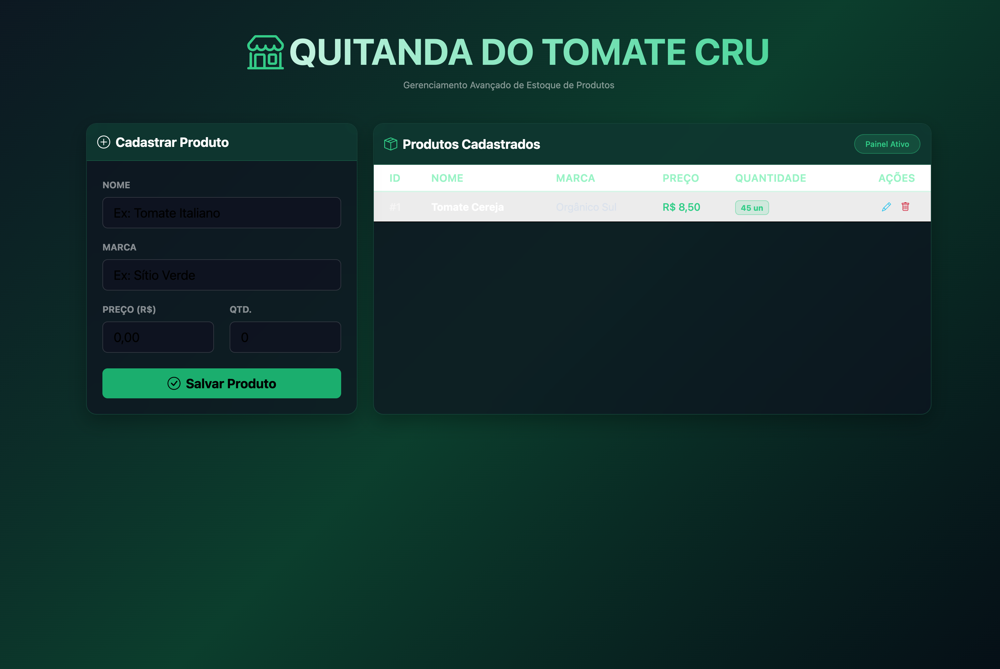

Explore os detalhes estruturados, escopo e tecnologias de cada projeto meu através da rotação automática.

Projeto focado na estruturação de um painel web interativo para exibição de cardápios gourmet. Desenvolvido utilizando as melhores práticas de semântica HTML e reaproveitamento de componentes do Bootstrap 5, o sistema implementa uma arquitetura modular que separa a galeria de imagens (carrossel) dos dados detalhados (modais), garantindo um código limpo, performático e de fácil manutenção.

Um sistema de simulação interativo desenvolvido para replicar a gestão e a monitorização de desempenho escolar em tempo real. O foco do projeto foi criar um ambiente dinâmico e responsivo onde utilizadores podem simular a atribuição e a dedução de pontuações de atividades, oferecendo um controle prático e preciso através de uma interface moderna e intuitiva. Este projeto tem um relógio em tempo real e salva dados (Contém duas páginas, login e tela principal).

Painel de Controle do Sistema — Interface principal da simulação, onde são gerenciados os pontos e as atividades dos alunos em tempo real de forma totalmente fluida e dinâmica.

Um painel visual e informativo focado na exibição das principais moedas utilizadas no comércio global e transações internacionais. O projeto foi estruturado para apresentar de forma clara e organizada os códigos de câmbio (como USD e EUR) e seus respectivos símbolos monetários.

Primeira etapa do Sistema Full-Stack de Gestão de Usuários desenvolvido em Python com Flask. Esta interface gerencia o fluxo de controle de acesso seguro e autenticação, validando de forma dinâmica as credenciais inseridas em relação aos registros salvos.

Segunda etapa da aplicação integrada, focada no recebimento e estruturação de novos perfis. O formulário processa dados completos como Nome, CPF estruturado, Data de Nascimento, E-mail e Senhas individuais de maneira ágil.

A terceira etapa conclui o ciclo do sistema com um painel administrativo em tempo real. Os dados armazenados em arquivos JSON são listados em uma tabela dinâmica com contraste otimizado, permitindo as ações completas de Edição e Exclusão.

Interface interativa desenvolvida para consolidar a aplicação prática e estilização customizada de componentes do Bootstrap 5. O projeto simula um painel administrativo moderno em modo escuro (Dark Mode), organizando recursos comuns de sistemas corporativos — como menus de navegação complexos, elementos de notificações, blocos colapsáveis de informação e formulários estruturados para recebimento de dados.

Interface analítica voltada para a renderização visual de métricas e indicadores de desempenho. Este módulo processa dados brutos gerados pelas etapas anteriores do ecossistema e os converte em gráficos limpos e painéis consolidados, facilitando o monitoramento estratégico das atividades.